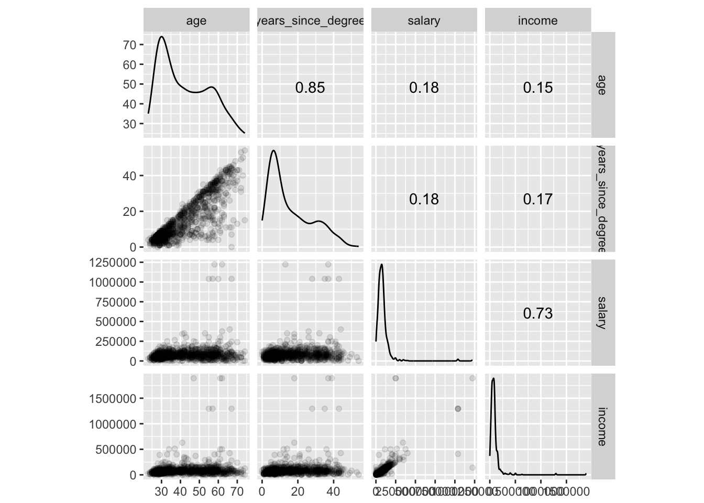

Lecture 15 Cross-Section Modeling
This lecture uses the following packages:
tidyverse
GGally15.1 Introduction
Modeling data gives you the possibility of predicting outside of the sample of data you have to extrapolate to observational units you have not observed (inference). In this lecture we will focus on how to do this in a cross-sectional setting (i.e., not over time). We will be trying to create a model of salary for recent college graduates. The result will be a model and a set of parameter estimates that can be used to predict the salary for a recent graduate our modeling process did not see (i.e., extrapolate).
15.2 Data
The National Science Foundation (NSF) runs the National Survey of College Graduates. We’ll use this data to compare salaries for different majors. For the rest of this lecture, I’ll assume you’ve downloaded the 2015 zip file and extracted the contents to a folder named “nscg”.
15.2.1 Layout
The raw data is in a fixed width format, so we’ll need to know what the layout is.
library(tidyverse)
layout <- read_table("data/nscg/LAYOUTPCG15.TXT", skip = 2, col_types = "ciciicc") %>%
slice(2:n())Let’s see if there are any gaps by seing if there is a difference between the start and the last ending plus 1.
summary(layout$START - (lag(layout$END) + 1))## Min. 1st Qu. Median Mean 3rd Qu. Max. NA's
## 0 0 0 0 0 0 115.2.2 Data Dictionary
The data dictionary is stored in an Excel file:
library(readxl)
dict <- read_xlsx("data/nscg/Dpcg15.xlsx")The data dictionary provides more detail than the layout file, which is useful for identifying the variables we want to work with.
15.2.3 The 2015 National Survey of College Graduates
Processing this whole file will take some time.
raw_survey <- read_fwf("data/nscg/EPCG15.DAT", fwf_widths(layout$LENGTH, col_names = layout$LABEL))For the factor variables, we can look at the Ppcg15.sas file for the mappings from integer values into character vectors. The below functions accept a vector of integers and return a character vector.
15.2.4 Variable Definitions
From looking at the Excel file, we can determine the label mapping for each variable. The label mapping name is in the SAS_FMT column. We can then look at the Ppcg15.sas file to see the corresponding mapping. We just need to edit these mappings slightly so they fit into a factor definition. (There do exist packages that will do this for you, but the following process gives you more control.)
ethnicity <- function(x) {
factor(
x,
levels = 1:7,
labels = c(
"Asian, non-Hispanic ONLY",
"American Indian/Alaska Native, non-Hispanic ONLY",
"Black, non-Hispanic ONLY",
"Hispanic, any race",
"White, non-Hispanic ONLY",
"Non-Hispanic Native Hawaiian/Other Pacific Islander ONLY",
"Multiple Race"
)
)
}
work_activities <- function(x) {
work_mapping <- matrix(
ncol = 2, byrow = TRUE,
data = c(
"01", "Accounting, finance, contracts",
"02", "Basic res.-study to gain sci. knwldg prima. for its own sake",
"03", "Apld. res.-study to gain sci. knwldg to meet recognized need",
"04", "Dev.-knowledge from res. for the prod. of materials, devices",
"05", "Design of equipment, processes, structures, models",
"06", "Computer applications, programming, systems development",
"07", "Human Resources - inc. recruiting, personnel dev, training",
"08", "Managing or supervising people or projects",
"09", "Production, operations, maintenance (e.g., chip production)",
"10", "Prof. services (healthcare, fin. serv., legal serv., etc.)",
"11", "Sales, purchasing, marketing",
"12", "Quality or productivity management",
"13", "Teaching",
"14", "Other work activity"
)
)
return(factor(x, levels = work_mapping[,1], labels = work_mapping[,2]))
}
fields <- function(x) {
field_mapping <- matrix(
ncol = 2, byrow = TRUE,
data = c(
11, "Computer and information sciences",
12, "Mathematics and statistics",
21, "Agricultural and food sciences",
22, "Biological sciences",
23, "Environmental life sciences",
31, "Chemistry, except biochemistry",
32, "Earth, atmospheric and ocean sciences",
33, "Physics and astronomy",
34, "Other physical sciences",
41, "Economics",
42, "Political and related sciences",
43, "Psychology",
44, "Sociology and anthropology",
45, "Other social sciences",
51, "Aerospace, aeronautical and astronautical engineering",
52, "Chemical engineering",
53, "Civil and architectural engineering",
54, "Electrical and computer engineering",
55, "Industrial engineering",
56, "Mechanical engineering",
57, "Other engineering",
61, "Health",
62, "Science and mathematics teacher education",
63, "Technology and Technical Fields",
64, "Other S&E related fields",
71, "Management and administration fields",
72, "Education, except science and math teacher education",
73, "Social service and related fields",
74, "Sales and marketing fields",
75, "Art and Humanities Fields",
76, "Other Non-S&E fields"
)
)
return(factor(x, levels = as.numeric(field_mapping[,1]), labels = field_mapping[,2]))
}
locations <- function(x) {
location_mapping <- matrix(
ncol = 2, byrow = TRUE,
data = c(
"099", "US, Unspecified",
"100", "Albania",
"102", "Austria",
"103", "Belgium",
"104", "Bulgaria",
"109", "France",
"110", "Germany, not specified",
"116", "Greece",
"119", "Ireland",
"120", "Italy",
"126", "Netherlands",
"128", "Poland",
"132", "Romania",
"134", "Spain",
"136", "Sweden",
"137", "Switzerland",
"138", "United Kingdom, not specified",
"139", "England",
"140", "Scotland",
"142", "Northern Ireland",
"148", "Europe, not specified",
"149", "Central Europe, not specified",
"150", "Eastern Europe, not specified",
"152", "Northern Europe, not specified",
"153", "Southern Europe, not specified",
"154", "Western Europe, not specified",
"156", "Serbia/Montenegro/Kosovo",
"160", "Croatia",
"180", "USSR",
"186", "Belarus (Byelarus)",
"187", "Russia",
"193", "Ukraine",
"202", "Bangladesh",
"207", "China",
"210", "India",
"212", "Iran",
"213", "Iraq",
"214", "Israel",
"215", "Japan",
"216", "Jordan",
"217", "Korea, not specified",
"218", "South Korea",
"222", "Lebanon",
"223", "Macao",
"227", "Nepal",
"229", "Pakistan",
"231", "Philippines",
"232", "Qatar",
"233", "Saudi Arabia",
"236", "Sri Lanka",
"238", "Taiwan",
"239", "Thailand",
"240", "Turkey",
"242", "Vietnam",
"245", "Asia, not specified",
"247", "East Asia, not specified",
"252", "Middle East, not specified",
"255", "Southeast Asia, not specified",
"257", "Southwest Asia, not specified",
"301", "Canada",
"304", "North America, not specified",
"312", "El Salvador",
"315", "Mexico",
"318", "Central America, not specified",
"337", "Cuba",
"339", "Dominican Republic",
"343", "Jamaica",
"353", "Caribbean, not specified",
"375", "Argentina",
"377", "Brazil",
"379", "Colombia",
"380", "Ecuador",
"385", "Peru",
"388", "Venezuela",
"389", "South America, not specified",
"408", "Cameroon",
"415", "Egypt",
"417", "Ethiopia",
"421", "Ghana",
"436", "Morocco",
"437", "Mozambique",
"440", "Nigeria",
"449", "South Africa",
"462", "Africa, not specified",
"463", "Central Africa, not specified",
"464", "Eastern Africa, not specified",
"468", "North Africa, not specified",
"469", "Western Africa, not specified",
"470", "Southern Africa, not specified",
"471", "Eritrea",
"501", "Australia",
"514", "New Zealand",
"527", "Oceania, not specified"
)
)
return(factor(x, levels = location_mapping[,1], labels = location_mapping[,2]))
}survey <- raw_survey %>%
transmute(
age = U_DEM_AGE,
gender = factor(U_DEM_GENDER),
race_ethnicity = ethnicity(U_DEM_MULTIPLE_RACE_ETHNICITY_CAT),
years_since_degree = 2015 - M_ED_MR_DEGREE_AWARD_YR,
degree_type = factor(
M_ED_MR_DEGREE_TYPE,
levels = 1:4,
labels = c('Bachelors', 'Masters', 'Doctorate', 'Professional')
),
current_location = locations(U_RESPONDENT_LOCATION_STATE_COUNTRY),
highschool_location = locations(L_ED_HS_SCHOOL_ST_CTRY_CD),
school_in_US = M_ED_MR_SCHOOL_REGION_US_NONUS == 'Y',
moved = current_location != highschool_location,
r1 = M_ED_MR_SCHOOL_CARNEGIE_CLS == "11",
field_of_study_group = factor(case_when(
O_ED_HD_MAJOR_ED_GRP_MAJOR_NEW == 1 ~ 'Computer and mathematical sciences',
O_ED_HD_MAJOR_ED_GRP_MAJOR_NEW == 2 ~ 'Biological, agricultural and environmental life sciences',
O_ED_HD_MAJOR_ED_GRP_MAJOR_NEW == 3 ~ 'Physical and related sciences',
O_ED_HD_MAJOR_ED_GRP_MAJOR_NEW == 4 ~ 'Social and related sciences',
O_ED_HD_MAJOR_ED_GRP_MAJOR_NEW == 5 ~ 'Engineering',
O_ED_HD_MAJOR_ED_GRP_MAJOR_NEW == 6 ~ 'S&E-Related Fields',
O_ED_HD_MAJOR_ED_GRP_MAJOR_NEW == 7 ~ 'Non-S&E'
)),
field_of_study = fields(O_ED_HD_MAJOR_ED_GRP_MINOR_NEW),
in_school = case_when(
N_ED_REF_WK_ENROLL_FT_PT_IND == '1' ~ TRUE,
N_ED_REF_WK_ENROLL_FT_PT_IND == '2' ~ TRUE,
TRUE ~ FALSE
),
work_activity = work_activities(F_JOB_WRK_ACTIVITY_PRIMRY),
salary = ifelse(H_JOB_SALARY_ANN == 9999998, NA, H_JOB_SALARY_ANN),
income = ifelse(H_JOB_TOTAL_INCOME == 9999998, NA, H_JOB_TOTAL_INCOME)
)15.2.5 Training/Validation/Test Sets
There are several things we need to do with this data.
- We want to create candidate models of salary
- We want to select a model based on its predictive accuracy
- We want to produce an estimate of the predictive accuracy of our chosen model
To accomplish these three goals, we need divide our data into three parts. The reason we need to split our data, is to avoid bias in our inferences. Bias is a systematic mistake in our inferences, which is bad. Since we are decreasing our sample size we will be increasing the variance of our inferences. This bias-variance tradeoff is an important concept in machine learning, but here we’ll just recognize it exists.
We will call the data for (1) our training dataset, the data for (2) our validation dataset, and the data for (3) our test set. For simplicity here we’ll split our data 80%-10%-10% into our training-validation-test sets. An easy way to grab random chunks of the data is to permute the indices, then take the first 80%, then 10%, etc.
Let’s make a decision up front to predicr
survey <- survey %>% filter(salary > 0)train_size <- round(nrow(survey) * 0.8)
validation_size <- round(nrow(survey) * 0.1)
test_size <- nrow(survey) - train_size - validation_size
permuted_indices <- sample(1:nrow(survey))
train <- survey[permuted_indices[1:train_size],]
validation <- survey[permuted_indices[(train_size + 1):validation_size],]
test <- survey[permuted_indices[(validation_size + 1):length(permuted_indices)],]15.3 Exploratory Data Analysis
Let’s begin by exploring our training set. We can start with a quick summary of all variables to see which could be meaningful in our model:
summary(train)## age gender
## Min. :16.00 F:27869
## 1st Qu.:31.00 M:33310
## Median :39.00
## Mean :42.27
## 3rd Qu.:53.00
## Max. :75.00
##
## race_ethnicity
## Asian, non-Hispanic ONLY : 9673
## American Indian/Alaska Native, non-Hispanic ONLY : 265
## Black, non-Hispanic ONLY : 4759
## Hispanic, any race : 6451
## White, non-Hispanic ONLY :38157
## Non-Hispanic Native Hawaiian/Other Pacific Islander ONLY: 226
## Multiple Race : 1648
## years_since_degree degree_type
## Min. : 0.00 Bachelors :29678
## 1st Qu.: 6.00 Masters :24123
## Median :11.00 Doctorate : 4875
## Mean :15.36 Professional: 2503
## 3rd Qu.:23.00
## Max. :56.00
##
## current_location highschool_location school_in_US
## Asia, not specified : 17 India : 2151 Mode :logical
## Europe, not specified : 10 China : 1211 FALSE:4587
## North America, not specified: 8 Canada : 473 TRUE :56592
## Mexico : 5 Philippines: 472
## Africa, not specified : 4 Taiwan : 290
## (Other) : 6 (Other) : 4929
## NA's :61129 NA's :51653
## moved r1
## Mode :logical Mode :logical
## FALSE:4 FALSE:40798
## TRUE :28 TRUE :20381
## NA's :61147
##
##
##
## field_of_study_group
## Biological, agricultural and environmental life sciences: 5250
## Computer and mathematical sciences : 5099
## Engineering :12742
## Non-S&E :16892
## Physical and related sciences : 2964
## S&E-Related Fields : 8749
## Social and related sciences : 9483
## field_of_study in_school
## Health : 6525 Mode :logical
## Management and administration fields: 5734 FALSE:57223
## Biological sciences : 3920 TRUE :3956
## Electrical and computer engineering : 3723
## Other Non-S&E fields : 3617
## Computer and information sciences : 3513
## (Other) :34147
## work_activity
## Managing or supervising people or projects :10345
## Prof. services (healthcare, fin. serv., legal serv., etc.) :10078
## Teaching : 7443
## Sales, purchasing, marketing : 4492
## Apld. res.-study to gain sci. knwldg to meet recognized need: 4464
## Computer applications, programming, systems development : 4438
## (Other) :19919
## salary income
## Min. : 100 Min. : 0
## 1st Qu.: 45000 1st Qu.: 44076
## Median : 70400 Median : 70000
## Mean : 84228 Mean : 90683
## 3rd Qu.: 100000 3rd Qu.: 102926
## Max. :1223166 Max. :1890537
## NA's :28We can see that our location variables are mostly NAs. We will drop these variables from our analysis to avoid several issues like multicollinearity and sampling bias.
library(GGally)
train %>%
sample_n(1000) %>%
as.data.frame() %>%
GGally::ggscatmat(alpha = 0.1)
15.4 Simple linear model
basic_model <- lm(log(salary + 1) ~ I(age - 25) + I((age - 25)^2) , data = train)
summary(basic_model)##
## Call:
## lm(formula = log(salary + 1) ~ I(age - 25) + I((age - 25)^2),
## data = train)
##
## Residuals:
## Min 1Q Median 3Q Max
## -6.6384 -0.3026 0.1348 0.4799 3.4965
##
## Coefficients:
## Estimate Std. Error t value Pr(>|t|)
## (Intercept) 1.065e+01 8.015e-03 1329.17 <2e-16 ***
## I(age - 25) 5.410e-02 9.770e-04 55.37 <2e-16 ***
## I((age - 25)^2) -1.185e-03 2.296e-05 -51.60 <2e-16 ***
## ---
## Signif. codes: 0 '***' 0.001 '**' 0.01 '*' 0.05 '.' 0.1 ' ' 1
##
## Residual standard error: 0.8477 on 61176 degrees of freedom
## Multiple R-squared: 0.04827, Adjusted R-squared: 0.04824
## F-statistic: 1551 on 2 and 61176 DF, p-value: < 2.2e-16Based on the above results which job types are associated with higher salaries?
15.5 Model selection
We can use the validation set to see how well our model performs in predicting salary for people not in our training set. By comparing the prediction on the performance on several model alternatives, we can select the best prediction model.
15.5.1 Model alternatives
In a real world situation you can test every possible linear combination of your variables on the right-hand side. Entirely different models (e.g., random forest regression) may be even better candidates, but for simplicity we’ll focus on a small set of linear models of salary.
school_model <- lm(
log(salary + 1) ~
I(age - 25) + I((age - 25)^2) +
years_since_degree + degree_type + r1 + field_of_study_group,
data = train
)
demo_model <- lm(
log(salary + 1) ~
I(age - 25) + I((age - 25)^2) +
gender + race_ethnicity,
data = train
)
current_model <- lm(
log(salary + 1) ~
I(age - 25) + I((age - 25)^2) +
in_school + work_activity,
data = train
)
kitchen_sink_model <- lm(
log(salary + 1) ~
I(age - 25) + I((age - 25)^2) +
years_since_degree + degree_type + r1 + field_of_study_group +
gender + race_ethnicity +
in_school + work_activity,
data = train
)
summary(kitchen_sink_model)##
## Call:
## lm(formula = log(salary + 1) ~ I(age - 25) + I((age - 25)^2) +
## years_since_degree + degree_type + r1 + field_of_study_group +
## gender + race_ethnicity + in_school + work_activity, data = train)
##
## Residuals:
## Min 1Q Median 3Q Max
## -7.1766 -0.2493 0.0904 0.4007 3.7995
##
## Coefficients:
## Estimate
## (Intercept) 1.045e+01
## I(age - 25) 4.247e-02
## I((age - 25)^2) -1.079e-03
## years_since_degree 6.320e-03
## degree_typeMasters 1.820e-01
## degree_typeDoctorate 4.022e-01
## degree_typeProfessional 5.404e-01
## r1TRUE 1.218e-01
## field_of_study_groupComputer and mathematical sciences 2.001e-01
## field_of_study_groupEngineering 2.765e-01
## field_of_study_groupNon-S&E 5.015e-02
## field_of_study_groupPhysical and related sciences 1.205e-01
## field_of_study_groupS&E-Related Fields 1.546e-01
## field_of_study_groupSocial and related sciences -5.138e-03
## genderM 2.548e-01
## race_ethnicityAmerican Indian/Alaska Native, non-Hispanic ONLY -8.784e-02
## race_ethnicityBlack, non-Hispanic ONLY -1.036e-01
## race_ethnicityHispanic, any race -5.257e-02
## race_ethnicityWhite, non-Hispanic ONLY -1.446e-03
## race_ethnicityNon-Hispanic Native Hawaiian/Other Pacific Islander ONLY 1.914e-02
## race_ethnicityMultiple Race -3.697e-02
## in_schoolTRUE -3.933e-01
## work_activityBasic res.-study to gain sci. knwldg prima. for its own sake -3.138e-01
## work_activityApld. res.-study to gain sci. knwldg to meet recognized need -9.043e-02
## work_activityDev.-knowledge from res. for the prod. of materials, devices 2.250e-02
## work_activityDesign of equipment, processes, structures, models 4.853e-02
## work_activityComputer applications, programming, systems development 8.170e-02
## work_activityHuman Resources - inc. recruiting, personnel dev, training -3.796e-02
## work_activityManaging or supervising people or projects 1.370e-01
## work_activityProduction, operations, maintenance (e.g., chip production) -2.304e-01
## work_activityProf. services (healthcare, fin. serv., legal serv., etc.) -1.185e-01
## work_activitySales, purchasing, marketing -2.724e-01
## work_activityQuality or productivity management -3.251e-02
## work_activityTeaching -5.217e-01
## work_activityOther work activity -3.701e-01
## Std. Error
## (Intercept) 2.145e-02
## I(age - 25) 9.697e-04
## I((age - 25)^2) 2.103e-05
## years_since_degree 5.523e-04
## degree_typeMasters 7.426e-03
## degree_typeDoctorate 1.347e-02
## degree_typeProfessional 1.731e-02
## r1TRUE 6.809e-03
## field_of_study_groupComputer and mathematical sciences 1.584e-02
## field_of_study_groupEngineering 1.325e-02
## field_of_study_groupNon-S&E 1.276e-02
## field_of_study_groupPhysical and related sciences 1.756e-02
## field_of_study_groupS&E-Related Fields 1.411e-02
## field_of_study_groupSocial and related sciences 1.342e-02
## genderM 6.732e-03
## race_ethnicityAmerican Indian/Alaska Native, non-Hispanic ONLY 4.758e-02
## race_ethnicityBlack, non-Hispanic ONLY 1.380e-02
## race_ethnicityHispanic, any race 1.247e-02
## race_ethnicityWhite, non-Hispanic ONLY 8.962e-03
## race_ethnicityNon-Hispanic Native Hawaiian/Other Pacific Islander ONLY 5.137e-02
## race_ethnicityMultiple Race 2.047e-02
## in_schoolTRUE 1.313e-02
## work_activityBasic res.-study to gain sci. knwldg prima. for its own sake 2.359e-02
## work_activityApld. res.-study to gain sci. knwldg to meet recognized need 1.930e-02
## work_activityDev.-knowledge from res. for the prod. of materials, devices 2.085e-02
## work_activityDesign of equipment, processes, structures, models 1.990e-02
## work_activityComputer applications, programming, systems development 1.938e-02
## work_activityHuman Resources - inc. recruiting, personnel dev, training 2.898e-02
## work_activityManaging or supervising people or projects 1.669e-02
## work_activityProduction, operations, maintenance (e.g., chip production) 2.180e-02
## work_activityProf. services (healthcare, fin. serv., legal serv., etc.) 1.718e-02
## work_activitySales, purchasing, marketing 1.863e-02
## work_activityQuality or productivity management 2.345e-02
## work_activityTeaching 1.745e-02
## work_activityOther work activity 1.980e-02
## t value
## (Intercept) 486.928
## I(age - 25) 43.792
## I((age - 25)^2) -51.290
## years_since_degree 11.444
## degree_typeMasters 24.510
## degree_typeDoctorate 29.866
## degree_typeProfessional 31.216
## r1TRUE 17.883
## field_of_study_groupComputer and mathematical sciences 12.633
## field_of_study_groupEngineering 20.867
## field_of_study_groupNon-S&E 3.931
## field_of_study_groupPhysical and related sciences 6.864
## field_of_study_groupS&E-Related Fields 10.956
## field_of_study_groupSocial and related sciences -0.383
## genderM 37.854
## race_ethnicityAmerican Indian/Alaska Native, non-Hispanic ONLY -1.846
## race_ethnicityBlack, non-Hispanic ONLY -7.506
## race_ethnicityHispanic, any race -4.216
## race_ethnicityWhite, non-Hispanic ONLY -0.161
## race_ethnicityNon-Hispanic Native Hawaiian/Other Pacific Islander ONLY 0.373
## race_ethnicityMultiple Race -1.806
## in_schoolTRUE -29.966
## work_activityBasic res.-study to gain sci. knwldg prima. for its own sake -13.305
## work_activityApld. res.-study to gain sci. knwldg to meet recognized need -4.686
## work_activityDev.-knowledge from res. for the prod. of materials, devices 1.079
## work_activityDesign of equipment, processes, structures, models 2.439
## work_activityComputer applications, programming, systems development 4.216
## work_activityHuman Resources - inc. recruiting, personnel dev, training -1.310
## work_activityManaging or supervising people or projects 8.209
## work_activityProduction, operations, maintenance (e.g., chip production) -10.571
## work_activityProf. services (healthcare, fin. serv., legal serv., etc.) -6.900
## work_activitySales, purchasing, marketing -14.624
## work_activityQuality or productivity management -1.386
## work_activityTeaching -29.894
## work_activityOther work activity -18.690
## Pr(>|t|)
## (Intercept) < 2e-16
## I(age - 25) < 2e-16
## I((age - 25)^2) < 2e-16
## years_since_degree < 2e-16
## degree_typeMasters < 2e-16
## degree_typeDoctorate < 2e-16
## degree_typeProfessional < 2e-16
## r1TRUE < 2e-16
## field_of_study_groupComputer and mathematical sciences < 2e-16
## field_of_study_groupEngineering < 2e-16
## field_of_study_groupNon-S&E 8.46e-05
## field_of_study_groupPhysical and related sciences 6.78e-12
## field_of_study_groupS&E-Related Fields < 2e-16
## field_of_study_groupSocial and related sciences 0.7019
## genderM < 2e-16
## race_ethnicityAmerican Indian/Alaska Native, non-Hispanic ONLY 0.0649
## race_ethnicityBlack, non-Hispanic ONLY 6.19e-14
## race_ethnicityHispanic, any race 2.50e-05
## race_ethnicityWhite, non-Hispanic ONLY 0.8718
## race_ethnicityNon-Hispanic Native Hawaiian/Other Pacific Islander ONLY 0.7094
## race_ethnicityMultiple Race 0.0710
## in_schoolTRUE < 2e-16
## work_activityBasic res.-study to gain sci. knwldg prima. for its own sake < 2e-16
## work_activityApld. res.-study to gain sci. knwldg to meet recognized need 2.80e-06
## work_activityDev.-knowledge from res. for the prod. of materials, devices 0.2806
## work_activityDesign of equipment, processes, structures, models 0.0147
## work_activityComputer applications, programming, systems development 2.49e-05
## work_activityHuman Resources - inc. recruiting, personnel dev, training 0.1903
## work_activityManaging or supervising people or projects 2.28e-16
## work_activityProduction, operations, maintenance (e.g., chip production) < 2e-16
## work_activityProf. services (healthcare, fin. serv., legal serv., etc.) 5.26e-12
## work_activitySales, purchasing, marketing < 2e-16
## work_activityQuality or productivity management 0.1657
## work_activityTeaching < 2e-16
## work_activityOther work activity < 2e-16
##
## (Intercept) ***
## I(age - 25) ***
## I((age - 25)^2) ***
## years_since_degree ***
## degree_typeMasters ***
## degree_typeDoctorate ***
## degree_typeProfessional ***
## r1TRUE ***
## field_of_study_groupComputer and mathematical sciences ***
## field_of_study_groupEngineering ***
## field_of_study_groupNon-S&E ***
## field_of_study_groupPhysical and related sciences ***
## field_of_study_groupS&E-Related Fields ***
## field_of_study_groupSocial and related sciences
## genderM ***
## race_ethnicityAmerican Indian/Alaska Native, non-Hispanic ONLY .
## race_ethnicityBlack, non-Hispanic ONLY ***
## race_ethnicityHispanic, any race ***
## race_ethnicityWhite, non-Hispanic ONLY
## race_ethnicityNon-Hispanic Native Hawaiian/Other Pacific Islander ONLY
## race_ethnicityMultiple Race .
## in_schoolTRUE ***
## work_activityBasic res.-study to gain sci. knwldg prima. for its own sake ***
## work_activityApld. res.-study to gain sci. knwldg to meet recognized need ***
## work_activityDev.-knowledge from res. for the prod. of materials, devices
## work_activityDesign of equipment, processes, structures, models *
## work_activityComputer applications, programming, systems development ***
## work_activityHuman Resources - inc. recruiting, personnel dev, training
## work_activityManaging or supervising people or projects ***
## work_activityProduction, operations, maintenance (e.g., chip production) ***
## work_activityProf. services (healthcare, fin. serv., legal serv., etc.) ***
## work_activitySales, purchasing, marketing ***
## work_activityQuality or productivity management
## work_activityTeaching ***
## work_activityOther work activity ***
## ---
## Signif. codes: 0 '***' 0.001 '**' 0.01 '*' 0.05 '.' 0.1 ' ' 1
##
## Residual standard error: 0.7619 on 61144 degrees of freedom
## Multiple R-squared: 0.2317, Adjusted R-squared: 0.2313
## F-statistic: 542.3 on 34 and 61144 DF, p-value: < 2.2e-1615.5.2 Comparing model performance
Now we can compare the performance of each of these models against the validation dataset. Let’s walk step-by-step through the process of calculating the root mean squared prediction error (or RMSPE, or RMSE) with just the school prediction.
school_prediction <- predict(school_model, validation)
salary_prediction <- exp(school_prediction) - 1
prediction_error <- salary_prediction - validation$salary
school_rmse <- sqrt(mean(prediction_error^2, na.rm = TRUE))
school_rmse## [1] 92757.45Now let’s compare that to the RMSE for the other models.
demo_rmse <- sqrt(mean((exp(predict(demo_model, validation)) - 1 - validation$salary)^2, na.rm = TRUE))
demo_rmse## [1] 93801current_rmse <- sqrt(mean((exp(predict(current_model, validation)) - 1 - validation$salary)^2, na.rm = TRUE))
current_rmse## [1] 93275.49kitchen_rmse <- sqrt(mean((exp(predict(kitchen_sink_model, validation)) - 1 - validation$salary)^2, na.rm = TRUE))
kitchen_rmse## [1] 90500.08The kitchen_model outperforms the others (lowest RMSE) so we will use it in our final step. Keep in mind there are many alternative methods of modeling salary, so the above test should not be considered exhaustive.
15.6 Predictions from the selected model
Finally, we can use our test dataset to evaluate the expected error for predictions from our chosen model. The only thing that changes relative to the kitchen_rmse we calculated above is swapping validation with test.
test_rmse <- sqrt(mean((exp(predict(kitchen_sink_model, test)) - 1 - test$salary)^2, na.rm = TRUE))
test_rmse## [1] 87955.76other_test_rmse <- sqrt(mean((predict(kitchen_sink_model, test) - log(test$salary + 1))^2, na.rm = TRUE))
other_test_rmse## [1] 0.7556778What this number gives us is a typical error from our model predictions. The fact that this error is so large tells us that our model does a really poor job of predicting salary.
15.7 Assignment
Add variables on parental background, estimate an updated kitchen sink model including these new variables, and report the RMSE on the validation and test sets.
N_ED_UG_FINAN_SUPP_GIFTS
W_DEM_PARENT_FATHERS_ED_LEVEL
W_DEM_PARENT_MOTHERS_ED_LEVEL15.8 See also
There are many approaches to model selection and a broad array of tools within R to help you along the way. Here’s a sampling: